Gestor de Metadatos
1.1
28/5/14
Descripción:
Compuesto por:
Zeolides 2.0Ayuda 2.0
Desarrollado por:
La gestión de datos propios de las aplicaciones, es imprescindible en la construcción de productos enfocados a clientes. El proceso de la construcción de los metadatos es un tema a resolver en el centro debido a su realización manual. El poder hacerlos directamente desde el framework base, y aplicarlas a los sistemas que lo integran es una ventajas de grandes valores agregados. Sin embargo, en la empresa no existe una herramienta capaz de lograr las realizaciones de “datos sobre datos” integradas ya al Marco de trabajo Zeolides. Por ello, los objetivos de la realización de este componente son:
2. Evitar errores de asimilación de componentes de gestión de datos hechos sobre otras tecnologías.
3. Reducir el tiempo y el costo de las implementaciones de metadatos.
4. Gestionar asistencias en tiempos cortos y eficazmente.
Problemas que resuelve:
• Poco conocimiento de la realización de metadatos.
• Realización manual de la asimilación de los productos de gestión de datos.
• Tiempo invertido en las elaboraciones de estos componentes.
• Eficiencia y rapidez en la construcción de productos dentro de Zeolides.
• Minimiza el margen de errores.
El sistema tiene dos componentes básicos el de gestión de datos de los datos y el de gestión general de los nomencladores.
Permite gestionar los metadatos de los subsistemas a desplegar en instalaciones clientes, posibilitando adicionar tabla, eliminar tabla, importar tabla, adicionar relaciones, eliminar relaciones, adicionar campos y eliminar campos. Además mediante este se puede adicionar, modificar y eliminar nomencladores.
El primer proceso a llevar a cabo es de la gestión del metadato y luego, si este constituye un nomenclador, se realiza la gestión del nomenclador en sí.
Gestión de metadatos
¿Cómo acceder al gestor de metadatos?
En el menú de opciones del sistema que se despliega al presionar el botón Inicio, se debe seleccionar el subsistema Herramientas. De este modo se muestran los módulos correspondientes al mismo. Entre los componentes se observará Metadatos y al seleccionarlo se despliegan los dos subcomponentes Gestionar metadatos para gestionar toda la información y Gestionar nomencladores para el trabajo con las tablas de tipo nomenclador, ver Figura 1.

Figura 1. Menú de acceso al Gestor de metadatos.
Para acceder a la interfaz principal se selecciona el subcomponente Gestionar metadatos en el menú mostrado en la Figura 1 y aparecerá en pantalla la interfaz Gestionar metadatos, ver Figura 2.

Figura 2. Interfaz principal para la gestión de metadatos.
Los componentes que agrupa la ventana son:
-
Barra de opciones de la gestión de tablas: Muestra las acciones que se pueden ejecutar con las tablas de la base de datos.
-
Listado de tablas gestionadas: Listado de las tablas existentes hasta le momento ya se hayan adicionado en el componente o importado desde la base de datos.
-
Barra de opciones de la gestión de campos de una tabla: Muestra las opciones que se pueden ejecutar con los campos de una tabla seleccionada en el listado de tablas gestionadas.
-
Listado de campos gestionados pertenecientes a la tabla seleccionada en el listado de tablas: Listado de los campos que tiene hasta el momento la tabla seleccionada.
Adicionar Tabla
En la interfaz principal se selecciona la opción Adicionar, ubicada en la barra de opciones de la gestión de tablas. Aparece el formulario Adicionar tabla, ver Figura 3.
 Figura 3. Formulario para adicionar una tabla.
Figura 3. Formulario para adicionar una tabla.
Si la tabla constituye un árbol se presiona el checkbox Árbol y se muestra un recuadro con los campos a introducir del árbol, ver Figura 4.

Figura 4. Campos a llenar en una tabla árbol.
| Tipo de tabla | Prefijo |
| Historial | his_ |
| Nomenclador | nom_ |
| Datos | dat_ |
| Cubo | cub_ |
| Dimensión | dim_ |
Eliminar tabla
Para eliminar una tabla, en el listado de tablas del panel superior de la interfaz principal se selecciona la que se desea eliminar. Luego se presiona encima de la tabla a eliminar quedando seleccionada. Se presiona el botón Eliminar ubicado en la barra de opciones del panel superior, ver Figura 5.
 Figura 5. Eliminar tabla.
Figura 5. Eliminar tabla.
 Figura 6. Mensaje de información, cuando se elimina una tabla.
Figura 6. Mensaje de información, cuando se elimina una tabla.
Importar tabla
En la barra de opciones de gestión de tablas, se presiona el botón Importar. Aparece la interfaz Importar tabla que muestra el listado de tablas de la base de datos configurada en el marco de trabajo, agrupadas por los esquemas al que pertenecen, ver Figura 7.

Figura 7. Importar tabla.
Se selecciona la tabla a importar y se observa que se activa el botón Aceptar. Ver Figura 8.

Figura 8. Ejemplo de selección de una tabla a importar.
Se presiona el botón y aparece el mensaje de éxito de la operación: “La tabla ha sido importada satisfactoriamente.”. Finalmente se aprecía que cierra esta interfaz y en la principal se actualiza el listado de tablas mostrando la tabla importada y sus características.
Adicionar Relación
Se selecciona en el panel superior de la interfaz principal la opción Gestionar relaciones, luego de haber seleccionado en el listado, la tabla destino de las relaciones a gestionar. Aparece la interfaz Gestionar relaciones, ver Figura 9.
 Figura 9. Gestionar relaciones
Figura 9. Gestionar relaciones
En esta ventana se presiona el botón Adicionar ubicado en la esquina superior izquierda y aparece en pantalla el formulario Adicionar relación, ver Figura 10.

Figura 10. Adicionar relación.
Se selecciona la Tabla origen que no es más que la tabla que se va a relacionar con la seleccionada en el listado y se observa que el identificador de dicha tabla se introduce automáticamente por el sistema en el Campo origen que es el que se va a adicionar en la relación. En el caso de que la relación es visible se marca el checkbox Es visible y se activa el listado de opciones con las que va a representar la relación. Estas opciones son:
1. Grid chequeable: Indica que se representará la relación en forma de grid.
2. Árbol chequeable: Indica que se representará en forma de árbol.
3. Nomenclador chequeable: Indica que se representará como un nomenclador.
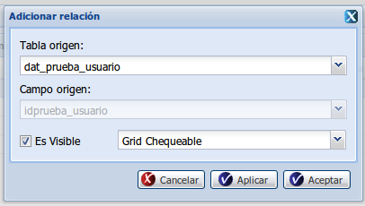
Figura 11. Ejemplo de adición de una relación.
En el caso de que se vaya a representar como un nomenclador se debe seleccionar de forma obligatoria el campo visible de la relación.
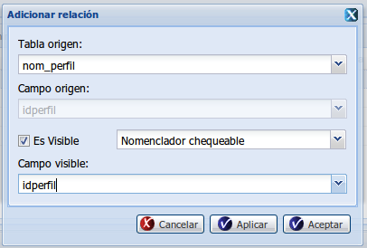
Figura 12. Ejemplo de inserción de una relación visible como nomenclador.
Finalmente se presiona el botón Aceptar y se muestra el mensaje: “La relación ha sido adicionada satisfactoriamente.” y se actualiza el listado de relaciones de la tabla mostrando la adicionada. Para continuar adicionando otras relaciones se presiona el botón Aplicar que adicionará la relación de la forma descrita y mantendrá el formulario en pantalla para nuevas adiciones. Para terminar el proceso sin salvar información, se presiona el botón Cancelar.
Eliminar Relación
Para eliminar una relación ya adicionada se selecciona en el panel superior de la interfaz principal la opción Gestionar relaciones, luego de haber seleccionado en el listado, la tabla destino de las relaciones a gestionar. Aparece la interfaz Gestionar relaciones. Se selecciona una relación de la lista de la interfaz anterior y se observa que se activa el botón Eliminar, ver Figura 13.
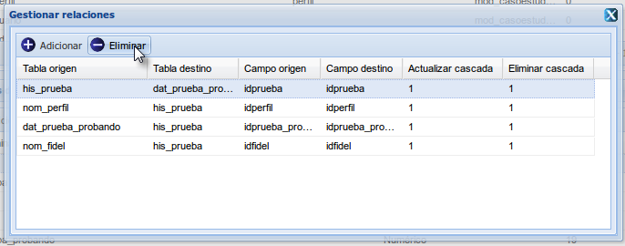
Se presiona el botón y se muestra el mensaje de confirmación: “¿Está seguro que quiere eliminar la relación seleccionada?”. Se acepta el mensaje y se actualiza el listado de relaciones y finalmente se muestra el mensaje de éxito de la operación: “La relación fue eliminada satisfactoriamente.”.
Adicionar Campo
En el panel superior de la interfaz principal se selecciona la tabla a la que se desea agregar el campo. Se observa que en el panel inferior aparecen los campos de la tabla, y en la parte superior de este panel el botón Adicionar, ver Figura 14.
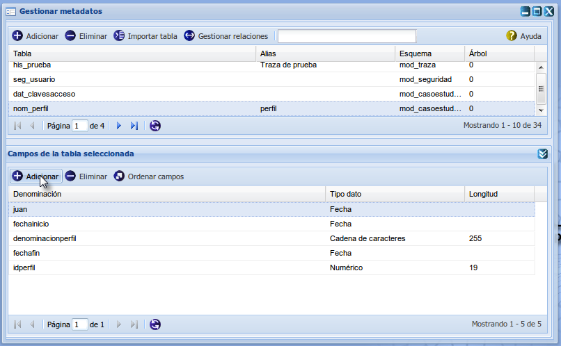
Se presiona el botón y aparece el formulario Adicionar campos, ver Figura 15.
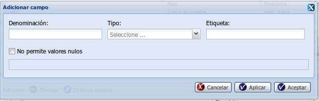
En este se introducen los campos Denominación y Etiqueta.
Si el campo no permite valores nulos se marca el checkbox No permite valores nulos.
Se selecciona el tipo del cual va a ser la tabla y en dependencia de este se muestra un recuadro debajo para que se introduzcan los valores de los campos requeridos en dependencia del tipo.
Los tipos pueden ser:
- Numérico: Se introducen los campos Longitud, Límite inferior, Límite superior y se indica si puede ser un número decimal en el checkbox Decimal.
- Cadena de caracteres: Se introducen los campos Longitud y se selecciona la Expresión regular.
- Fecha: Se introducen los campos Fecha inicio y Fecha fin.
- Sí/No: No se introducen campos ya que estos son los únicos valores que podrá tomar el campo, es decir “Verdadero” o “Falso” respectivamente.
- Nomenclador: Se introduce cuando el campo es un nomenclador, se especifican los datos Tabla y si contiene Filtrado.
- Área de texto: Se introduce el campo Longitud solamente para este tipo.
Cuando se termine de introducir los campos se presiona el botón Aceptar y se muestra el mensaje: “El campo fue adicionado satisfactoriamente.”. Se actualiza el listado de campos en el panel inferior de la tabla seleccionada en el panel superior, mostrando el campo adicionado.
Para introducir otros campos sin cerrar el formulario se presiona el botón Aplicar.
Para abortar la operación se presiona el botón Cancelar.
Eliminar Campo
En el panel superior de la interfaz principal se selecciona la tabla donde está contenido el campo. Se observa que en el panel inferior aparecen los campos de la tabla, y en la parte superior de este panel el botón Eliminar, ver Figura 16.
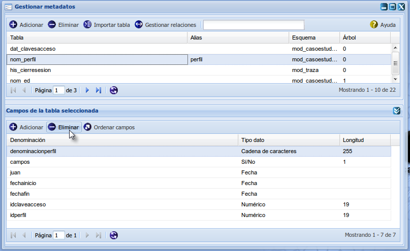
Finalmente se muestra el mensaje de confirmación: “¿Está seguro que desea eliminar el campo?”. Se presiona el botón Aceptar del mismo y se observará que se actualiza el listado de campos y se muestra el mensaje: “El campo ha sido eliminada satisfactoriamente.”.
Ordenar Campos
En el panel superior de la interfaz principal se selecciona la tabla a la que se desea ordenar los campos. Se observa que en el panel inferior aparecen los campos de la tabla, y en la parte superior de este panel el botón Ordenar.Se presiona el botón y aparece el formulario Modificar orden de los campos visibles, ver Figura 17.
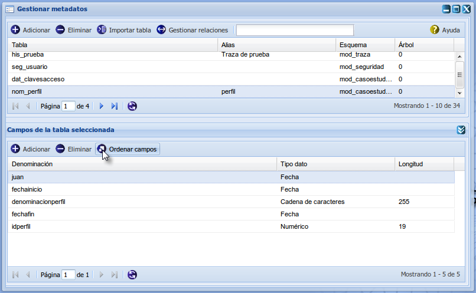
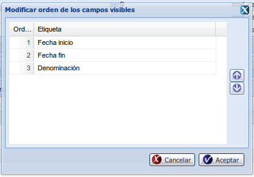
Figura 18.Formulario para ordenar los campos.Gestión de Nomencladores
¿Cómo acceder al gestor de nomencladores?
En el menú de opciones del sistema que se despliega al presionar el botón Inicio, se debe seleccionar el subsistema Herramientas. De este modo se muestran los módulos correspondientes al mismo. Entre los componentes se observará Metadatos y al seleccionarlo se despliegan los dos subcomponentes Gestionar metadatos para gestionar toda la información y Gestionar nomencladores para el trabajo con las tablas de tipo nomenclador, ver Figura 19.

Figura 19. Menú de acceso al Gestor de nomencladores.
Para acceder a la interfaz principal se selecciona el subcomponente Gestionar nomencladores en el menú mostrado en la Figura 20 y aparecerá en pantalla la interfaz Gestionar nomencladores,ver Figura 20.
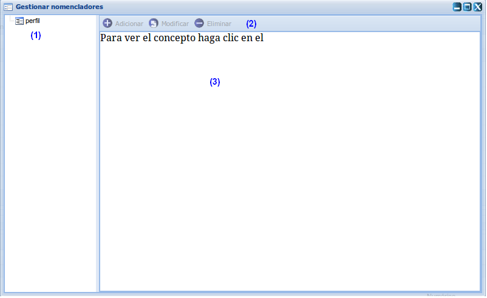
Figura 20. Interfaz principal de la gestión de nomencladores.
Como muestra la figura los componentes de la gestión de nomencladores son:
-
Listado de tablas adicionadas de tipo nomenclador. Se muestra de cada nomenclador el alias con el cual se adicionó mediante la funcionalidad de Adicionar tabla .
-
Barra de opciones que se activan cuando se selecciona un nomenclador del listado.
-
Listado de datos del nomenclador seleccionado en el listado. En las columnas se mostrarán los campos que tiene el nomenclador además de los de Denominación, Fecha inicio y Fecha fin que son los que siempre tienen por defecto todos los nomencladores.
Adicionar Tupla
Se presiona el botón Adicionar y aparece el formulario Adicionar, ver Figura 21.
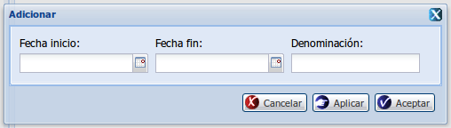
Posteriormente se introducen los campos básicos:
-
Denominación: Nombre de la tupla.
-
Fecha inicio: Fecha a partir de la cual estará activa la tupla.
-
Fecha fin: Fecha hasta la cual estará activa la tupla, si se deja vacío, significa que estará siempre activa, hasta que sea eliminada o modificada.
Estos aparecerán siempre por defecto, además, si a la tabla de tipo nomenclador se le adicionaron otros campos, estos se muestran también en el formulario, para que el usuario pueda introducir la información correspondiente. Se presiona el botón Aceptar y para el caso de que se quieran adicionar otros datos al nomenclador seleccionado se presiona el Aplicar.
Finalmente se muestra el mensaje: “Los datos han sido adicionados satisfactoriamente.”.
Modificar Tupla
Se selecciona el nomenclador al que se le va a modificar la información en el listado de nomencladores y se presiona el botón Modificar ubicado en la barra de opciones de la interfaz, se observa que se cargan los datos del nomenclador, ver Figura 22.
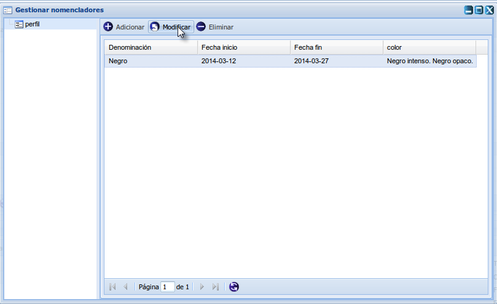
Se presiona el botón Modificar y aparece el formulario Modificar mostrando los datos insertados, ver Figura 23.
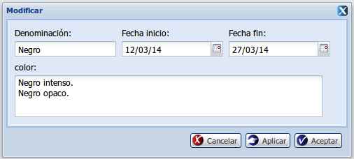
Figura 23. Formulario para modificar tupla.
Luego se modifican los datos pertinentes, se presiona el botón Aceptar y aparece el mensaje de éxito de la operación: “El dato ha sido modificado satisfactoriamente.”En caso de que no se desee cerrar el formulario se presiona el botón Aplicar para guardar los cambios. Para abortar la operación sin salvar información se presiona el botón Cancelar.
Eliminar Tupla
Se selecciona el nomenclador al que se le va a eliminar la especificación en el listado de nomencladores. Luego se selecciona en el listado de tuplas ya adicionadas al nomenclador, la que se quiere eliminar y se observa que se activa el botón Eliminar ubicado en la barra de opciones de la interfaz. Se presiona el botón y se muestra el mensaje de confirmación: “¿Está seguro que quiere eliminar el dato seleccionado?”. Ver Figura 24.
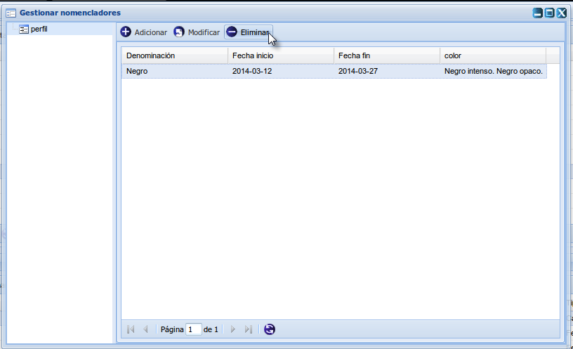
Se acepta este y se muestra el mensaje de éxito: “El dato ha sido eliminado satisfactoriamente.” y se actualiza el listado de tuplas donde no se encuentra la eliminada.
Videos Tutoriales
Video Acceso al Gestor de Metadatos
Video Adicionar Tabla
Video Eliminar Tabla
Video Adicionar Relación
Video Eliminar Relación
Video Adicionar y Eliminar Campo
Video Ordenar Campos
Video Acceso al Gestor de Nomencladores
Video Adicionar Tupla
Video Modificar Tupla
Video Eliminar Tupla